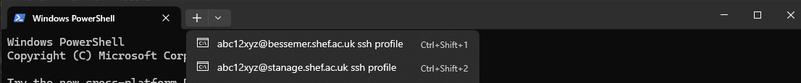

Setting up Profiles in Windows Terminal
We recommend the use of Windows Terminal on Windows systems and users will find Windows Terminal available on the University’s managed desktops by default.
Windows has a built-in SSH client that you can use in Windows Terminal. See also Tutorial: SSH in Windows Terminal
The latest builds of Windows 10 and Windows 11 include a built-in SSH server and client that are based on OpenSSH, a connectivity tool for remote sign-in that uses the SSH protocol.
You can start an SSH session in your command prompt by executing ssh YOUR_USERNAM@CLUSTER_NAME.shef.ac.uk and you will be prompted to enter your password.
You can create a Windows Terminal profile that does this on startup by adding the commandline setting to a profile in your settings.json file inside the list of profile objects.
To open the settings.json file in your default editor click settings (shown below) whilst holding the Alt key. Alternatively hold Alt + Ctrl + ,.
{kind=link}
If you add the following to your settings.json inside the list of profile objects, you will have created a profile for both Bessemer and Stanage:
{
"name": "YOUR_USERNAME@bessemer.shef.ac.uk ssh profile",
"commandline": "ssh YOUR_USERNAME@bessemer.shef.ac.uk"
},
{
"name": "YOUR_USERNAME@stanage.shef.ac.uk ssh profile",
"commandline": "ssh YOUR_USERNAME@stanage.shef.ac.uk"
}
Tip
Usernames to connect with all HPC services will be the same as those you use to login to MUSE not the prefix on your email address.
Replace YOUR_USERNAME with your university IT user name.
Now save changes to the settings.json.
You can now click on a session profile (as shown below) to start connecting at which point you will be prompted for your username, password and then with a Duo MFA prompt (or a request for your TOTP verification code on Stanage). Please enter these details and your terminal will connect as shown below.
{kind=link}